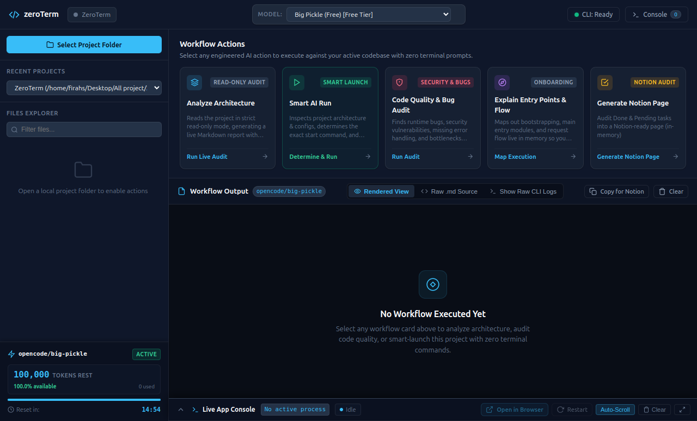

Desktop App / AI ToolszeroTerm
Interface graphique Linux native légère conçue autour d'OpenCode CLI pour fluidifier les workflows de développement assistés par IA. Intègre l'analyse intelligente de projet en un clic, les logs en streaming, la découverte dynamique de modèles gratuits, un compteur de rate-limit en temps réel et un visualiseur d'architecture Markdown en mémoire.